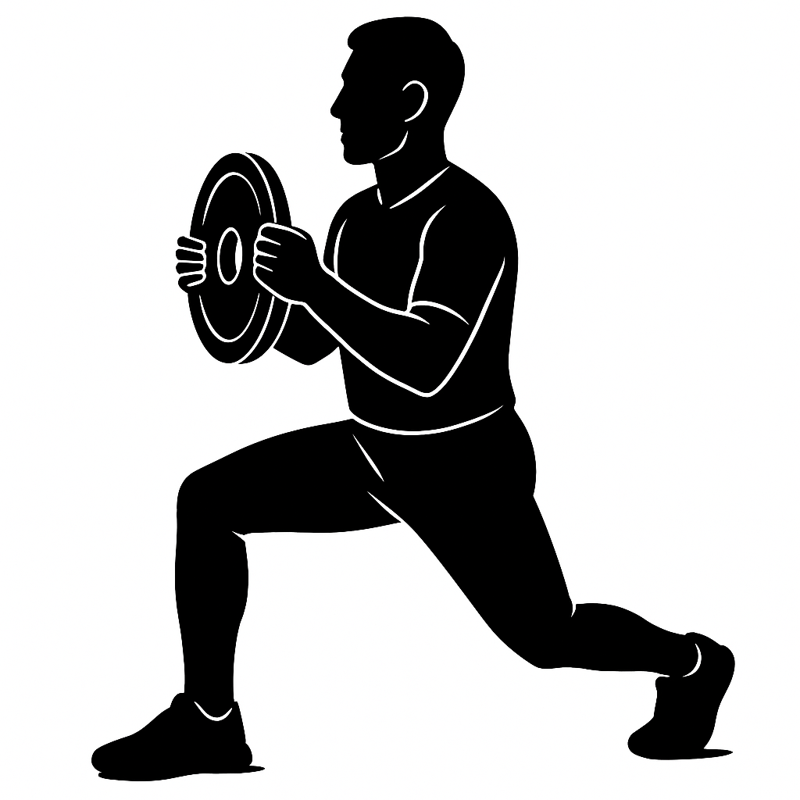

今日のメニュー（構造6＋ウエイト3）
0）構造評価で状態を確認した上で、このメニューを「同じ内容で」積み上げていきます。
1ヶ月で10回回せれば、その月は構造づくりの量として100％達成とみなします。
構造ドリル（EX1〜EX6）
① 捕手型トライポッド（Dynamic Tripod Squat）
目的：横アーチを支点に、しゃがみ〜立ち上がりの「迎撃→逃がし」を身につける。
強度：ウォーターバッグ／MB抱え 8〜10回 × 1〜2セット（両足）
ステップ台に両足で立ち、踵をわずかにはみ出してセット。横アーチを支点にしゃがみ、足趾側に寄りすぎれば前に、踵側に寄りすぎれば後ろに倒れるギリギリをコントロールしながら、上下動を安定させる。

② 胸郭×肩甲帯バンドローテ（Rib–Scap Switch）
目的：胸郭（肋骨）と肩甲帯の「分離」と「入れ替わり」を作り、投打の遅れと走りを整える。
強度：ライト〜ミディアムバンド 6〜8回 × 1〜2セット／左右
バンドを胸郭の回旋方向と逆側から張り、胸郭だけを回して一瞬止める。肩甲帯はバンドのテンションを感じながら“取り残す”か、“後から追いかけて入れ替わる”感覚をつくる。腕ではなく肋骨の回旋を主役にする。

③ 肩甲帯取り残しドリル（Lost Scap Pattern）
目的：胸郭だけが先に動き、肩甲帯が“置いていかれる”タイムラグを体で覚える。
強度：自重〜軽プレート（2.5〜5kg） 6〜8回 × 1セット／左右
ヒンジ姿勢またはスプリット立位で、胸郭だけをわずかに回旋させる。肩甲帯はその場に残るイメージで固定し、戻すときは「胸郭が先・肩甲帯が後」の順で戻す。壁は使わず、内部の分離感だけで成立させる。

④ 反応ステップ（Drop Heel React Step）
目的：踵の落下反動を使って、一歩目の引き上げと片脚支持の反応を磨く。
強度：左右 各4〜6回 × 1〜2セット（質優先）
ステップ台に片足を乗せ、踵をはみ出してセット。踵を“落とす”反動で素早く足を引き上げ、そのままステップ台上で片脚立ちになる。横アーチを支点に、落下→引き上げ→片脚支持までを一連の流れで行う。

⑤ HEXバー RDL（Tripod Hinge Control）
目的：足底トライポッドを保ったまま、骨盤ヒンジと胸郭ポジションをコントロールする。
強度：60〜75％1RM 5〜6回 × 3セット（RPE6〜7）
足底の横アーチが潰れない範囲でヒンジ。腰を反りすぎず、胸郭をやや前後に“遊ばせる”余白を残す。捕手の構え〜切り返しに必要な、骨盤と胸郭の中間ポジションを作るイメージで行う。

⑥ ランドマインプレス（Rib–Scap Switch Drive）
目的：胸郭でためて、肩甲帯の入れ替えで加速する投打の“核心パターン”を作る。
強度：軽〜中負荷 5〜6回 × 2〜3セット／左右
スプリット立位でランドマインを保持。後脚側の胸郭をわずかに開き、先に胸郭で動き出す。肩甲帯は遅れて走り、プレスの終盤で「胸郭と肩甲帯が入れ替わる」感覚をつくる。腕で押さず、構造で押し出す。

ベースウエイト（SQ／BP／Row）
⑦ バックスクワット（Base SQ）
目的：捕手姿勢で使う“中間位”を保ったまま、全身出力の土台をつくる。
強度：RPE5〜6 3〜5回 × 2〜3セット
深さよりも、足底と胸郭・骨盤のポジションを優先。EX1で作った上下動の感覚をそのままバーベルに載せていくイメージで行う。

⑧ ベンチプレス（Scap Support Bench）
目的：肩甲帯の“受け皿”を作りつつ、胸郭の微小な動きを許したまま押す。
強度：RPE6前後 4〜6回 × 2〜3セット
ブリッジは最小限。肩甲帯でしっかり支えながら、胸郭がわずかに上下できる余白を残して押す。EX2・EX6とつながる「押しの基礎」。

⑨ ワンハンドロウ（Rib Slide Row）
目的：胸郭スライドを主役にした“引き”で、肩甲帯の引き側の整理を行う。
強度：左右 各6〜8回 × 2セット
腰の回旋ではなく、胸郭のスライドで引き動作をスタートさせる。肩甲帯を固めすぎず、EX3の「取り残し感」と両立させながら行う。

今日の実施を記録
このボタンは index.html の「今月の達成率」と同じロジックでカウントされます。
1日1回、「今日のメニューセットをやり切ったら」押してください。
今月の達成状況
今月の達成率
0%
今月はまだメニュー実施が記録されていません。
今月の実施日